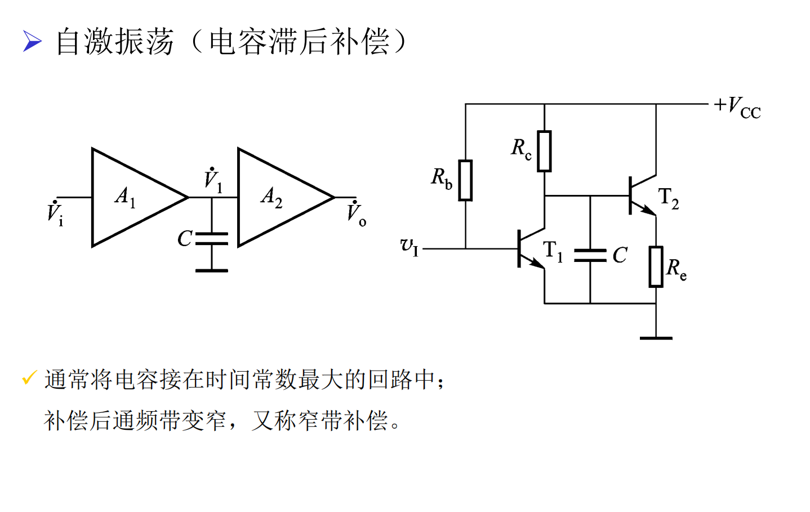
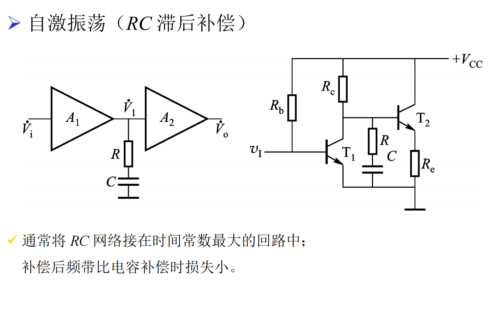

传递函数（三极点模型）：
选 $10^5\,\text{Hz}$ 原因：$10^5$ 为系统最低的上限截止频率 $f_H$，视为系统的主极点 $f_H$。
相位补偿后，主极点 $f_{P1}$ 变为：
时间常数 $T$ 最大 $\implies$ 对应的上限截止频率 $f_H$ 最小。
接入补偿电容 $C_{\text{补偿}}$ 后：
主极点对应的 $f_H$ 会变得更小，即第①点中 $10^5\,\text{Hz}$ 的主极点被拉低至 $10^2\,\text{Hz}$。
补偿后幅频特性下降速度：
从新主极点 $f_{P1}'$ 开始以 $-20\,\text{dB/十倍频}$ 下降，原因：当遇到次极点 $f_{P2}$ 时，总相移 $\varphi_A$ 会急剧下降。
稳定性要求：幅频特性应最好在次极点 $f_{P2}$ 之前下降到 $0\,\text{dB}$ 以下，
即保证在总附加相移 $|\Delta\varphi_A| < 180^\circ$ 之前，增益已降至 $0\,\text{dB}$ 以下。
补偿后新主极点 $f_{P1}'$ 相对于原主极点 $f_P$ 向低频移动，
使得在相同频率下，总相移 $|\varphi_A|$ 更大，相位相对滞后，
因此称为"滞后补偿"。
传递函数：
核心原理：引入一个零点 $1+j\omega RC$，用于抵消系统的次极点 $1+j\omega f_{P2}$。
原电容补偿要求主极点 $f_{P1}'$ 在 $f_{P2}$ 前降至 $0\,\text{dB}$ 以下，带宽损失大；
RC 补偿通过零点抵消次极点后，有效极点变为 $f_{P3}$，显著减小了带宽损失。